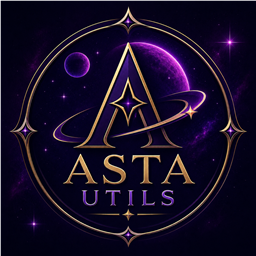

Mantenha suas sequências (streaks) do TikTok sempre vivas. Siga o passo a passo abaixo — leva menos de um minuto.
Use o botão ⬇ Baixar APK acima. O download começa direto pelo próprio site, sem sair da página.
Quando o download terminar, toque na notificação ou encontre o arquivo .apk na pasta Downloads e abra-o.
Se aparecer um aviso, permita "Instalar de fontes desconhecidas" ou toque em "Instalar assim mesmo". Isso é normal para apps fora da Play Store.
Toque em "Instalar", aguarde alguns segundos e depois em "Abrir". Pronto — o Asta Utils está no seu celular!
O Asta Utils é distribuído diretamente como APK para oferecer atualizações rápidas e recursos que as lojas de apps costumam restringir. É totalmente funcional e mantido pelos desenvolvedores oficiais.
Sim. O arquivo vem do repositório oficial no GitHub, sem intermediários. O aviso do Android sobre "fontes desconhecidas" aparece para qualquer app instalado fora da Play Store — não indica problema com este app.
O próprio app avisa quando há uma nova versão e faz a atualização para você. Você também pode voltar a esta página e baixar a versão mais recente a qualquer momento.